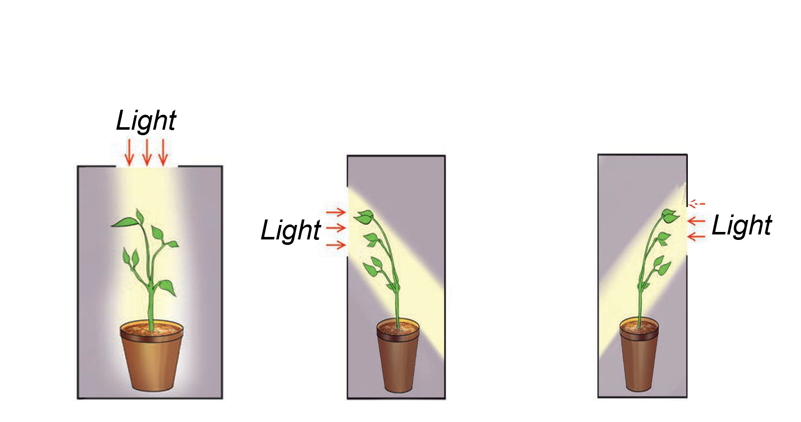

Respiration
All living things respire. Respiration is a process whereby living things obtain energy from food by taking in oxygen and releasing carbon dioxide. Respiration provides the body with the energy required for various activities.
Sensitivity
Living things sense and respond to stimuli in their environment. The ability of living things to detect and respond to stimuli in their environment is called sensitivity or irritability. Examples of stimuli are light, temperature and water. Animals detect stimuli by using sense organs such as the nose, skin, eyes, tongue and ears. Plants respond to stimuli using roots, stem, branches and flowers. Figure 3 shows how plants responding to light stimulus.
